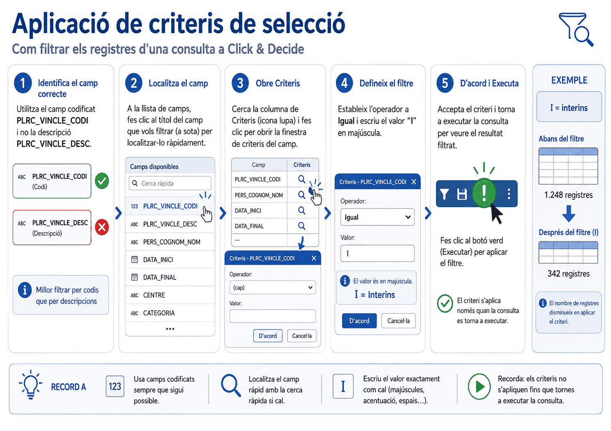
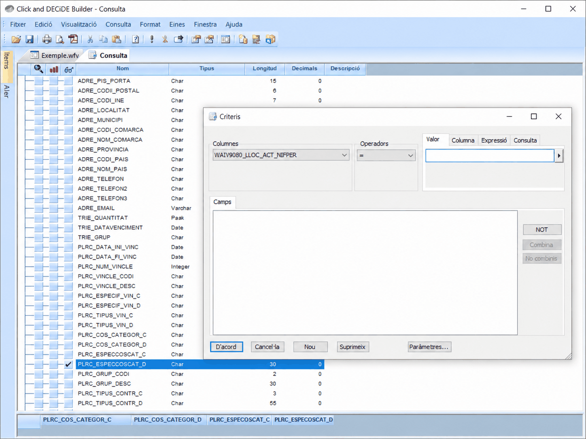
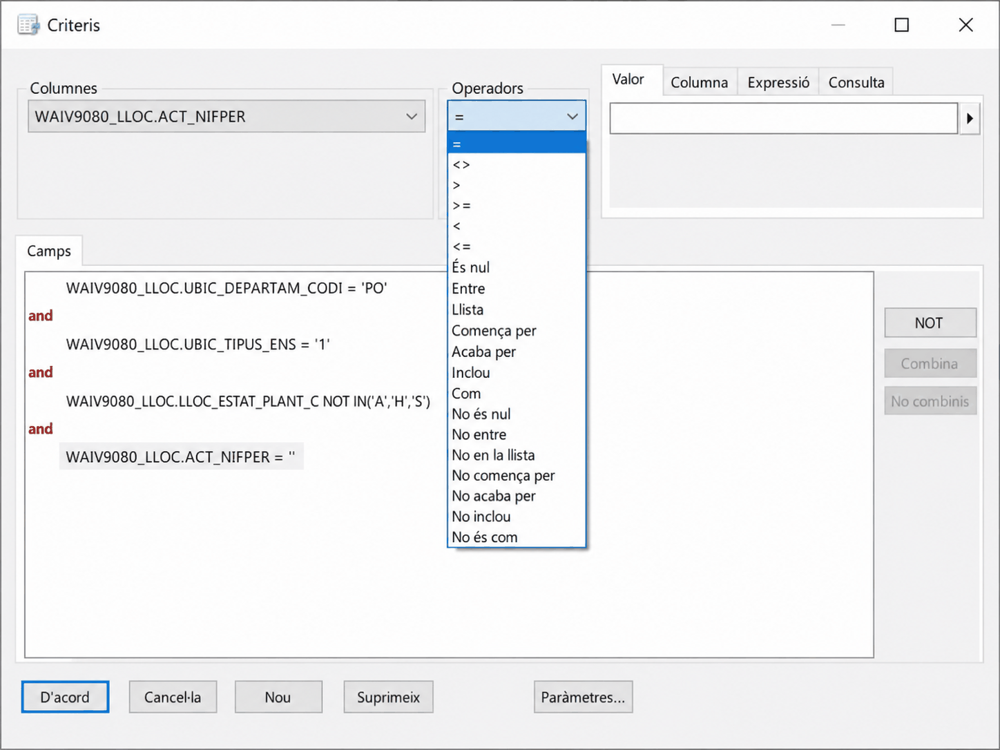
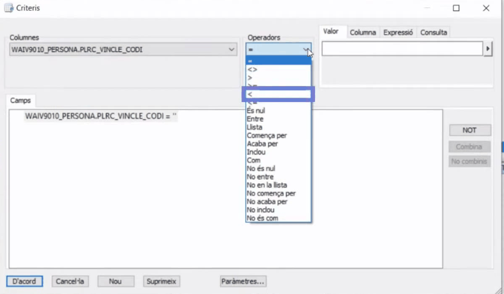
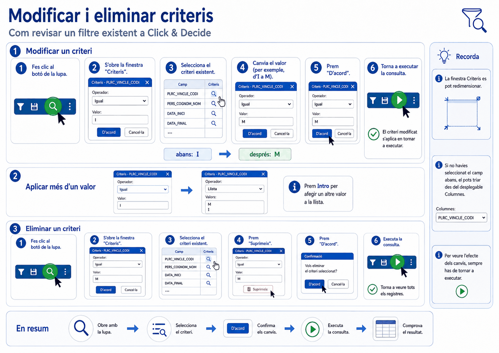
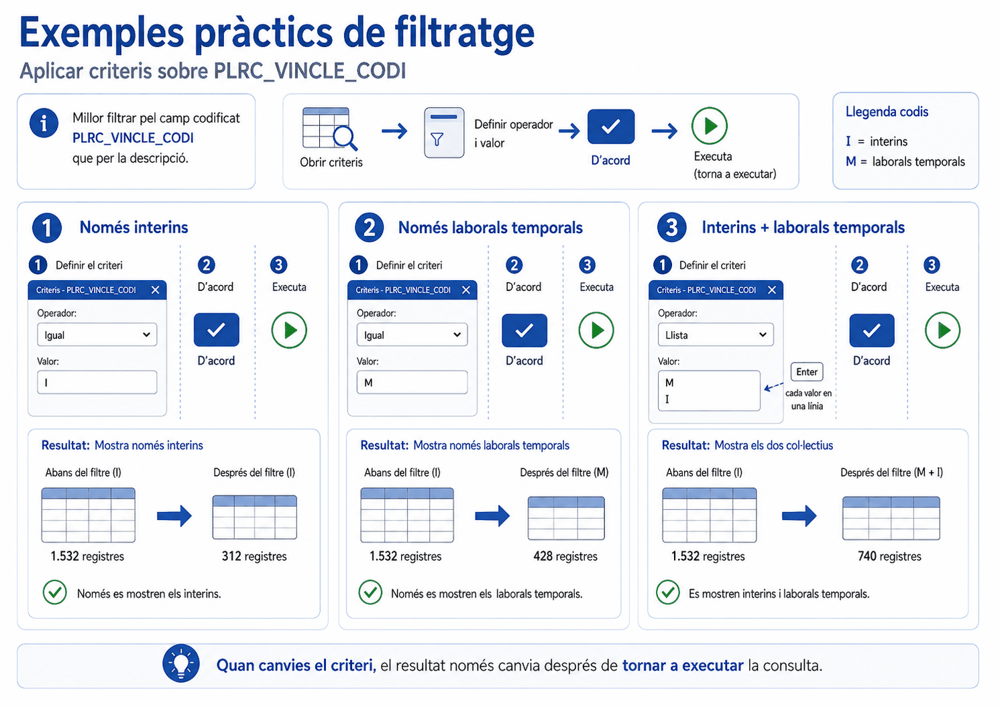

Apartat 1Què és un criteri
L'objectiu d'establir criteris de selecció és extreure únicament les dades dels registres que compleixen unes condicions. Rarament interessen els milers de registres d'una taula sencera: es vol el personal interí, els llocs vacants o les baixes d'un mes.
Els camps sobre els quals establiu criteris no han de ser necessàriament els que heu triat per veure. Podeu filtrar per un camp que no apareix a la graella. Filtrar i mostrar són decisions independents.
Apartat 2Obrir la finestra Criteris
Hi ha dos camins, i convé conèixer els dos perquè serveixen per a coses diferents.
Des del camp
Clic a la casella de la columna de la lupa, a la línia del camp que voleu filtrar. S'obre la finestra amb aquell camp ja carregat. És el camí per crear un criteri nou.
Des de la barra d'eines
Botó de la lupa a la barra d'eines superior. Obre la finestra amb tots els criteris ja aplicats. És el camí per revisar, modificar o suprimir.
Igual que amb l'ordenació, si no trobeu el camp a la llista, feu clic a la capçalera de la columna a la graella de resultats i el programa el localitza.

La finestra Criteris es pot redimensionar arrossegant la cantonada inferior dreta. Val la pena fer-la gran des del primer moment: el panell Camps és on es llegeix la consulta sencera, i amb la finestra petita no s'hi veu res.
Apartat 3Anatomia de la finestra
La finestra Criteris té sempre la mateixa estructura, i es llegeix d'esquerra a dreta com una frase:

Al desplegable Columnes els camps apareixen
qualificats amb el nom de la taula, en la forma
WAIV9010_PERSONA.PLRC_VINCLE_CODI. Quan a la unitat 7 tingueu
criteris sobre dos camps de famílies diferents, aquest prefix és el que us
permetrà distingir-los d'un cop d'ull al panell
Camps.
-
Columnes
La llista desplegable amb els camps de la taula. Aquí es tria sobre quin camp s'estableix la condició.
-
Operador
El desplegable de comparació. La taula completa és a l'apartat següent.
-
Valor
Amb què es compara. I aquí hi ha una cosa que molta gent no descobreix mai: no cal que sigui un valor escrit a mà.
Les quatre pestanyes de comparació
Al costat de Valor hi ha unes pestanyes que determinen amb què es compara el camp:
| Pestanya | Compara el camp amb | Quan es fa servir |
|---|---|---|
| Valor | Un valor o diversos que escriviu. | El cas normal. |
| Columna | Un altre camp de la taula. | Comparar dues dates entre elles, per exemple. |
| Expressió | Una fórmula o un paràmetre. | És la via dels paràmetres. Unitats 16 i 17. |
| Consulta | El resultat d'una altra consulta ja creada. | Filtrar per una llista que surt d'una altra consulta. |
Els botons de la part inferior
| Botó | Què fa |
|---|---|
| D'acord | Guarda els criteris establerts i torna a la consulta. |
| Cancel·la | Anul·la les modificacions fetes des de la darrera acceptació. |
| Nou | Duplica el camp per establir-hi un segon criteri. |
| Suprimeix | Elimina el criteri seleccionat. |
| Paràmetres | Obre la definició de paràmetres. Unitat 16. |
Els botons del marge dret
Actuen sobre la llista de criteris ja definits, que apareix al panell Camps de la part inferior. Aquest panell es llegeix com la condició que s'aplicara de veritat, i es va omplint sol a mesura que definiu criteris.
- NOT: nega la condició establerta.
- Combina i No combinis: fan i desfan agrupacions de criteris entre dos camps o més, tancant-los entre parèntesis. És la clau de la unitat 7 i encara no cal fer-los servir.
Combina i No combinis surten desactivats fins que no teniu dos criteris o més seleccionats alhora. Si els veieu grisos, no és cap error: encara no hi ha res per agrupar.
Apartat 4La taula d'operadors
Triar l'operador adequat és el que fa que el resultat sigui correcte. Els operadors es divideixen en tres famílies segons el tipus de camp: de text, de número o data, i el cas especial de nul.
La llista és simètrica: gairebé tot operador té el seu contrari, format afegint-hi No al davant. Val la pena adonar-se'n, perquè estalvia haver de negar condicions amb el botó NOT.
| Afirmatiu | Contrari | Què fa |
|---|---|---|
| = | <> | Igual, o diferent, del valor indicat. Només per a un únic valor. |
| > | - | Més gran que el valor indicat. |
| >= | - | Més gran o igual. Clau per a la lògica de vigència de les unitats 13 i 14. |
| < | - | Més petit que el valor indicat. |
| <= | - | Més petit o igual. També clau per a la vigència. |
| És nul | No és nul | El camp no té cap valor. Només funciona als camps de data. Apartat 11. |
| Entre | No entre | Dins, o fora, del rang entre dos valors. El més còmode per a períodes. |
| Llista | No en la llista | Igual a qualsevol dels valors indicats, o a cap d'ells. Apartat 8. |
| Comença per | No comença per | Coincidència pel principi. Útil per a codis jeràrquics. |
| Acaba per | No acaba per | Coincidència pel final. |
| Inclou | No inclou | El text apareix en qualsevol posició. És la solució al problema dels camps buits de les unitats 9 i 18. |
| Com | No és com | Comparació per patró. |
Tenir No en la llista vol dir que no cal enumerar tot el que voleu: podeu enumerar el que no voleu, que sovint són tres valors en comptes de vint. A la unitat 8 és exactament així com s'obtenen els llocs vigents.


L'operador = només serveix si busqueu un
valor. Si el que voleu és "interins o laborals temporals", posar-hi dos
criteris amb = units per AND no torna res, perquè ningú pot
ser les dues coses alhora. L'operador correcte és
Llista.
Apartat 5La regla d'or: filtreu per codi
A la unitat 4 vam veure que molts conceptes tenen dos camps: un de codi i un de descripció. Ara toca la regla, i és la recomanació que més es repeteix a tot el material oficial:
El videotutorial la diu així: "sempre que vulguem aplicar filtres, ho fem des dels camps que contenen la codificació i no pas des dels camps que contenen la descripció". Els primers tenen valors curts i tancats; els segons són text lliure.
Fràgil
Depèn de com estigui escrit exactament: accents, majúscules, espais de farciment, apòstrofs.
Robust
Un sol caràcter, d'un conjunt tancat i documentat al PDF de la taula.
Els motius, tots quatre ja apareguts al curs:
- Els espais de farciment. Un camp de text s'omple amb espais fins a la seva longitud. Una descripció llarga és més exposada a aquest problema que un codi d'un caràcter. Unitat 4.
-
Els apòstrofs. En triar del desplegable un valor com
L'Hospitalet de Llobregat, el programa de vegades elimina l'apòstrof i la consulta torna zero registres. Unitat 18. - Les majúscules. El valor s'ha d'escriure respectant majúscules i minúscules.
-
Les errades d'escriptura. Escriure
InteriperInterítorna zero registres i no dóna cap avís.
Dues vies. La primera, el PDF de la taula a la intranet, que és on estan documentats. La segona, fer una consulta de registres únics sobre aquell camp per veure quins valors hi ha realment: és exactament el que farem a la unitat 11, i és la manera més ràpida de descobrir la codificació d'un camp que no té descripció.
Apartat 6Exemple pas a pas
Objectiu: obtenir només el personal interí de la taula de persones.
-
Localitzeu el camp
A la llista de camps, busqueu
PLRC_VINCLE_CODI. Recordeu el truc de fer clic a la capçalera de la columna a la graella. -
Obriu la finestra
Clic a la casella de la columna de la lupa, a la línia d'aquell camp.
-
Deixeu l'operador a Igual
Busquem un únic valor, així que
=és correcte. -
Escriviu el valor
A la caixa Valor, escriviu
Ien majúscula. Cal respectar exactament majúscules i minúscules. -
Accepteu i executeu
D'acord, i després Executar. Mireu el nombre de registres de la cantonada inferior dreta: ha d'haver baixat molt.
Si el nombre de registres no baixa, el criteri no s'ha aplicat. Si cau a zero, el valor està mal escrit o l'operador no és l'adequat. Aquestes dues lectures us estalviaran molt temps a partir d'ara.
Apartat 7Modificar un criteri
Per canviar un filtre ja posat, per exemple per buscar ara laborals temporals
amb codi M, no cal tornar a la llista de camps:

Apartat 8L'operador Llista
Quan voleu diversos valors del mateix camp, per exemple els interins i els laborals temporals, l'operador correcte és Llista.
-
Canvieu l'operador
De
=a Llista. -
Escriviu els valors, un per línia
Escriviu
Mi premeu Retorn. A sota, escriviuIi premeu Retorn. Han de quedar tots dos llistats. -
Accepteu i executeu
El resultat inclou els registres que compleixen qualsevol de les condicions.
També existeix No en la llista, que exclou els valors indicats en comptes d'incloure'ls. És l'operador amb què a la unitat 8 deixarem fora els llocs històrics i els previstos, i sovint és molt més curt d'escriure que enumerar tot el que sí que voleu.
Els valors de la Llista s'escriuen un a sota de l'altre, prement Intro després de cadascun. Si els poseu tots seguits a la mateixa línia, el programa entendrà que busqueu un sol valor que diu literalment això.
Apartat 9Més d'un criteri al mateix camp
Llista serveix per a diversos valors iguals, però de vegades cal aplicar condicions diferents sobre el mateix camp. El cas típic són les dates: que una data sigui posterior a una i, alhora, anterior a una altra.
Aquest botó és imprescindible a les unitats 13 i 14, on una mateixa data de fi ha de complir dues condicions alternatives: ser posterior a una data o ser nul·la. Sense Nou no es pot construir.

Apartat 10Suprimir un criteri
En tornar a executar, la consulta mostra altre cop tots els registres de la taula sense aquell filtre. És, un cop més, el nombre de registres el que us confirma que s'ha aplicat.
Apartat 11El parany de "És nul"
Aquest apartat és curt i és el més important de la unitat. La documentació oficial ho diu en una línia que passa desapercebuda:
L'operador És nul comprova que no hi hagi cap valor al camp, però només funciona als camps de data.
El motiu ja el sabeu de la unitat 4:
Camp de text buit
No està buit de veritat: Click & Decide l'ha omplert d'espais fins a la seva longitud. Tècnicament no és nul.
Camp de data buit
Una data no es pot farcir d'espais. Quan no hi ha data, el camp sí que és nul de veritat.
Per als camps de text buits cal filtrar per l'espai en blanc. A la unitat 9 en veurem la primera aplicació i a la unitat 18, el matís que la completa:
| Tipus de camp | Buscar-lo buit | Buscar-lo amb contingut |
|---|---|---|
| Data | És nul | No és nul |
| Text | Inclou un espai, o Igual a un espai segons el cas | Diferent d'un espai |
Apartat 12Errors freqüents
El que passa
La consulta torna zero registres.
He posat dos criteris i no surt res.
El filtre no fa efecte.
Filtro per població i no en troba cap.
El que passa de veritat
Valor mal escrit, majúscula equivocada, o És nul sobre un camp de text.
Els criteris s'uneixen amb AND per defecte i busqueu dues coses incompatibles. Us cal Llista, o l'OR de la unitat 7.
No heu tornat a executar.
El programa ha esborrat l'apòstrof en triar el valor del desplegable. Unitat 18.
Apartat 13Exercicis
Els interins
ReprodueixSobre WAIV9010_PERSONA, filtreu el personal amb vincle interí. Anoteu el nombre de registres abans i després d'aplicar el criteri.
Pista
Camp de codi, no de descripció. Operador =, perquè és un
únic valor. I la I va en majúscula.
Comprovació
El que heu de comprovar no és el número exacte, sinó que baixi respecte del total. Si es queda igual, el criteri no s'ha aplicat; si cau a zero, el valor està mal escrit.
Dos criteris que es maten
Trenca
Voleu els interins i també els laborals temporals
(codi M). Feu-ho primer malament, a propòsit:
- Deixeu el criteri
= 'I'. -
Amb el botó Nou, afegiu un segon criteri sobre
el mateix camp:
= 'M'. - Executeu i mireu el nombre de registres.
- Ara feu-ho bé amb l'operador Llista.
Què hauria d'haver passat
Zero. Els criteris s'uneixen amb AND per defecte, i cap persona pot tenir dos vincles alhora. És la mateixa trampa que a la unitat 7 provocarà el cas dels alts càrrecs.
Recordeu aquest zero: quan una consulta torna zero i els valors són correctes, sospiteu sempre de l'AND.
El camp que sempre torna zero
Resol
Us demanen la llista de llocs sense ningú que els tingui
reservats. Sabeu que el camp de la reserva és
SIM_RESERVA_NIF, de tipus text.
Un company ho ha intentat amb És nul i li torna zero registres, tot i que hi ha llocs sense reserva. Per què, i com es fa?
Pista
Rellegiu l'apartat 11 i penseu de quin tipus és el camp.
Solució
Per què falla. És un camp de text, i els camps de text buits estan plens d'espais de farciment, no són nuls. És nul només funciona en camps de data, així que la condició no la compleix mai ningú.
Com es fa. Filtrant per l'espai en blanc, prement la barra espaiadora a la caixa de valor:
I al revés, per als llocs que sí que tenen reserva, l'operador és Diferent d'un espai. Aquesta és exactament la consulta de l'apartat de llocs reservats de la unitat 9.
Apartat 14Llista de comprovació
- Explicar què fa un criteri i per què no cal mostrar el camp filtrat.
- Obrir la finestra Criteris pels dos camins i saber per a què serveix cadascun.
- Llegir la finestra com a columna, operador i valor.
- Dir amb què es pot comparar un camp, a banda d'un valor escrit.
- Triar l'operador adequat entre igual, diferent, rangs, Entre i Llista.
- Justificar per què s'ha de filtrar pel camp de codi i no pel de descripció.
- Aplicar, modificar i suprimir un criteri.
- Fer servir Llista i saber que existeix No en la llista.
- Posar dues condicions sobre el mateix camp amb el botó Nou.
- Explicar per què És nul torna zero registres en un camp de text.
- Dir com es busca un camp buit segons si és de text o de data.
- Interpretar el nombre de registres: no baixa, o cau a zero.
Ja sabeu posar criteris, però tots s'uneixen amb AND. La unitat 7 recorre la taula de persones a fons i resol el cas que necessita OR i parèntesis: alts càrrecs o subdireccions, però només del vostre departament.